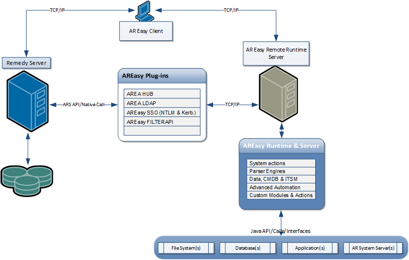

AREasy is a powerful (runtime) tool and API used to manipulate workflow objects and data, managed by one or more BMC Remedy AR Server instance. This application could be used directly in Remedy workflows (via a dedicated FILTERAPI plugin) or like a client-server or standalone utility, having possibility to extract or update data or to deploy or export workflows. Additionally, using the runtime engine and API you can create your own actions which could be integrated and executed to deliver content and signals to the workflow objects.

The main goal is to deliver standard operations (called actions) that could be executed from command line or using Remedy workflow objects to manage server workflows (data and definitions), to maintain foundation data for ITSM suite and CMDB data (CIs and related details) and to perform common administrative activities related with BMC Remedy AR System server. AREasy Runtime is coming with a simplified Java API to create standard ARS plugins and with a complete set of out-of-the-box plugins: general FILTER API plugin which can be used for any general purpose, and AREA plugin which can replace actual C AREA plugin, having capabilities to configure and design authentication workflow based on your needs. Beside on these "abstract" plugins, AREasy delivers (into a separate module) two specialized AREA plugins, for LDAP authentication and for single-sign-on (for more details see areasy-sso module documentation).
Depending by your needs AREasy could run in three modes:
Tipically the application is used as a central bus for integrations,
for third party systems and applications which should exchange data with AR System server.
AREasy has possibility to communicate with the ARS servers in a synchrony
mode (based on FILTERAPI module) but also in an asynchron mode (running
binary client from the workflow as a normal process or outside of ARS
workflows). For example, if you will try extract data from an excel
file during an workflow execution and to save data you should
run the runtime client implemented in FILTERAPI - to receive a
synchronized answer with your workflow, to bring data in real time and
then to save and process it. This parsing action action is
already implemented and distributed with the runtime, and,
speaking for this scenario, you should
only implement an additional filter object which should call the
FILTERAPI
option (specifying AREASY
string value for the FILTERAPI name) into a Set
Field
action, defining the
input command and mapping the form field which should receive the
answers (the parsed values). So, AREasy could help you to interrogate
and integrate other applications and datasource with minimum effort,
reducing dramatically the time for integration implementation.
One of main advantages of using AREasy in server mode is that the actions implemented and deployed in the runtime container, could be called using impersonation mechanism, avoiding unmanaged transactions or other system constraints (like licensing policies, transactions with the same user from multiple hosts, etc.). If you want to execute a user workflow and one of the steps cannot be implemented with ARS objects and definitions, (e.g. if you want to manage some external data inside of your workflow execution session - that means that the current user should keep his console open but in the same time, the same user should be connected on the external service to collect different data and to bring it in the workflow) AREasy will manage all these ARS external actions, working with a different user session but impersonated by the current user.
The runtime is the main part of AREasy application, having capability to assume input parameters and to parse them, to compose runtime syntax to call different actions. The actions are already implemented Java classes (having a special coding format) which are registered in the runtime configuration files.
When the runtime is called will
be created an instance of Runtime Manager component (see the API) which
could be one of these three options described before: server, client
or standalone. To differentiate these modes you should start the runtime specifying
parameter -mode
with one of those values: server
or client.
To start in standalone mode it's enough to ignore this parameter.
Another way to call a different type of runtime is to execute a
specific binary (from $AREASY_HOME/bin folder) which can do only one of these running modes:
areasy.sh - is the client mode, server.sh
is the server mode, etc. If
you want to start the runtime in server mode, all the other parameters
will be ignored. If you
want to execute an action (so to start the runtime in client
mode or standalone) you need to
specify all necessary parameters to define a complete command, and the
most import is to specify the action name which can be pointed out
using -action parameter name.
In case you need help to see
how the command line looks like you need to execute help action.
(areasy -action help -command <command name>).
To stop the runtime server (a runtime instance started in server mode) you must use
a special action called shutdown or stop
which should be called in the client mode from the same host where
server instance was started. If you want to execute shutdown action
remotely you need to specify the connectivity and credentials
parameters (see below the standard list of parameters).
When you are starting runtime manager in the client mode you can use two optional parameters to specify the server host and the TCP/IP port for connectivity to the runtime server. So, in this scenario the runtime server is running on a specific manchine and the runtime client is called from another machine (e.g. your workstation).
| -host | Runtime
server name. If is ignored the server name will be the localhost |
| -port | Port
number to connect to the runtime server. If is omitted the port number
will be taken from configuration file, reading property app.server.port |
To start the runtime in the
standalone or client mode always you must call an action, specifying
parameter -action
and then a value indicating the action name registered in the runtime configuration sectors.
This configuration is stored in properties files
(the main file is cfg/default.properties)
and the action name is given by app.runtime.actions properties.
The application is comming with a special set of already implemented actions to manipulate data and workflow objects from a AR System server or from ITSM applications. To start the execution of an action which should be connected to the AR System server you must use the following comon parameterization:
| -arserver | Server
name - required login parameter that specifies the server to log in to.
If the parameter is not specified will be considered localhost
server name. |
| -aruser | Required login parameter that identifies the user account |
| -arpassword | Optional login parameter that identifies the user account. Omit the option if the user account has no password |
| -arport | TCP port number used to log in when the portmapper is turned off |
| -arrpc | RPC identifier when the portmapper is turned on |
| -impersonate | This
parameter could override the runtime configuration (because by default
is working using impersonation) and will specify that actual user
connection and session will be performed using a general (and maybe
admin) user but impersonated for specified user in parameter -aruser |
The list below describes the main parameters which could be used by any runtime action.
| -asynchron | |
| -priority | |
| -loglevel | |
| -logformatter | |
| -file | |
| -input-file | |
| -output-file | |
| -compactmode | |
| -notification | |
| -report | |
| -reportnodata | |
| -reportnolog | |
| -notificationmailbox | |
| -notificationrecipientto | |
| -notificationrsubject | |
| -arserveralias | |
| -arremoteserver | |
| -arremoteuser | |
| -arremotepassword | |
| -arremoteport | |
| -arremoterpc | |
| -notifier | |
| -timer |
...
...
...
...
...
...